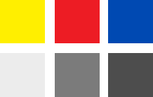
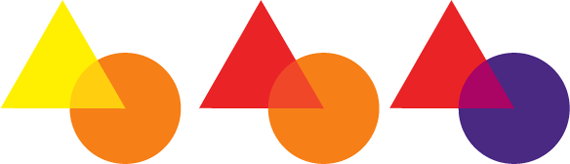
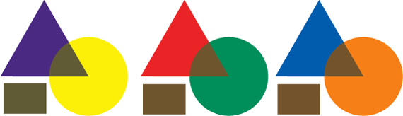

Основные цвета
Основные цвета – это тона, с помощью которых можно получить все остальные оттенки.Это:
- Красный
- Желтий
- Синий
Если смешать между собой красные, синие и желтые световые волны, то получится белый свет. Однако, с красками такое слияние работать не будет. Для художников существует отдельная таблица смешения, которая пересекается с комбинацией волн, но соблюдает свои правилам.
Так на практике при соединение желтой, красной,синей краски получится оттенок коричневого, который не существует в спектральном свете, а является ответом нашего глаза на несбалансированное отражение волн.
Желтый, красный, синий — разные по светлоте, в которой яркость на пике. Если их перевести в черно белый формат, то вы отчетливо увидите контраст.
Сложно представить себе яркий темно-желтый тон, как и яркий светло-красный. За счет яркости в разных диапазонах светлоты создается огромная гамма промежуточных насыщенных красок: оранжевых, красно-оранжевых, салатовых, изумрудных, сине-зеленых, сиреневых, красно-фиолетовых, фиолетовых и др. салатовых, изумрудных, сине-зеленых, сиреневых, красно-фиолетовых, фиолетовых и др. Эти три краски образуют практически всю палитру, за исключением черного, белого, серого. Принимая их за первичную основу цветостроения стоит представлять, что вторичные цвета все же менее яркие, чем их родители, а оттенки, образованные от второго круга с помощью черного, белого либо оттенков, произведенных от первичного круга — еще более тусклые.Построение оттенков из основных цветов
Пары из «упряжки» основных цветов образуют следующие краски второго круга:
________ОРАНЖЕВЫЙ_____________ФИОЛЕТОВЫЙ_______________ЗЕЛЕНЫЙ____
- ЖЕЛТЫЙ + КРАСНЫЙ = ОРАНЖЕВЫЙ
-
- КРАСНЫЙ + СИНИЙ = ФИОЛЕТОВЫЙ
- СИНИЙ + ЖЕЛТЫЙ = ЗЕЛЕНЫЙ
Если смешивать вторичные цвета, то есть оранжевый, фиолетовый и зеленый, с основными (которые уже присутствуют в составе цвета), то их порядок не изменится, они так же останутся во втором круге, так как мы тока изменяем количество содержания, а не качество:
_ЖЕЛТО-ОРАНЖЕВЫЙ_____КРАСНО-ОРАНЖЕВЫЙ_____КРАСНО-ФИОЛЕТОВЫЙ___
- ЖЕЛТЫЙ + ОРАНЖЕВЫЙ = ЖЕЛТО-ОРАНЖЕВЫЙ
- КРАСНЫЙ + ОРАНЖЕВЫЙ = КРАСНО-ОРАНЖЕВЫЙ
- КРАСНЫЙ + ФИОЛЕТОВЫЙ = КРАСНО-ФИОЛЕТОВЫЙ
__ФИОЛЕТОВО-СИНИЙ___________СИНЕ-ЗЕЛЕНЫЙ___________САЛАТОВЫЙ___
- СИНИЙ + ФИОЛЕТОВЫЙ = СИНЕ-ФИОЛЕТОВЫЙ
-
СИНИЙ + ЗЕЛЕНЫЙ = СИНЕ-ЗЕЛЕНЫЙ
- ЖЕЛТЫЙ + ЗЕЛЕНЫЙ = САЛАТОВЫЙ
Добавление во вторичные тона основные, но которые не присутствуют уже в нем, приводят к смешению всех трех основных цветов. Результатом получается коричневый. Такие пары называют дополнительными.
- ЖЕЛТЫЙ + ФИОЛЕТОВЫЙ (КРАСНЫЙ + СИНИЙ) = КОРИЧНЕВЫЙ
- КРАСНЫЙ + ЗЕЛЕНЫЙ (ЖЕЛТЫЙ + СИНИЙ) = КОРИЧНЕВЫЙ
- СИНИЙ + ОРАНЖЕВЫЙ (КРАСНЫЙ + ЖЕЛТЫЙ) = КОРИЧНЕВЫЙ
Смешивая дополнительные оттенки, такие как фиолетовый + желтый, красный + зеленый, синий + оранжевый дают средне темный красно-коричневый оттенок. Если же смешивать не краску, а световые лучи, должен получится эффект серого света. Но так как краска, только отражает волну, то 100% замещения не будет.
Основные цвета краски для печати
Очень важно получать максимум тонов из минимального набора краски для цветной печати. На сегодня существует 4 необходимые краски для реализации всего спектра, где красный заменен на насыщенный розовый. Такая цветовая модель называется CMYK.
- МАДЖЕНТА
- ЖЕЛТЫЙ
- ЦИАН
- ЧЕРНЫЙ
Где маджента — оттенок фуксии, циан — ярко-голубой цвет, а белым является тон печатного материала.